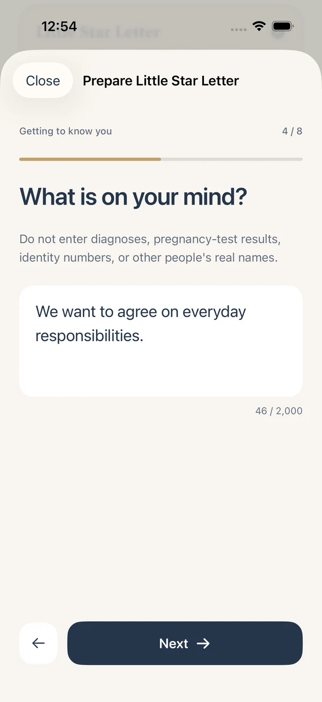
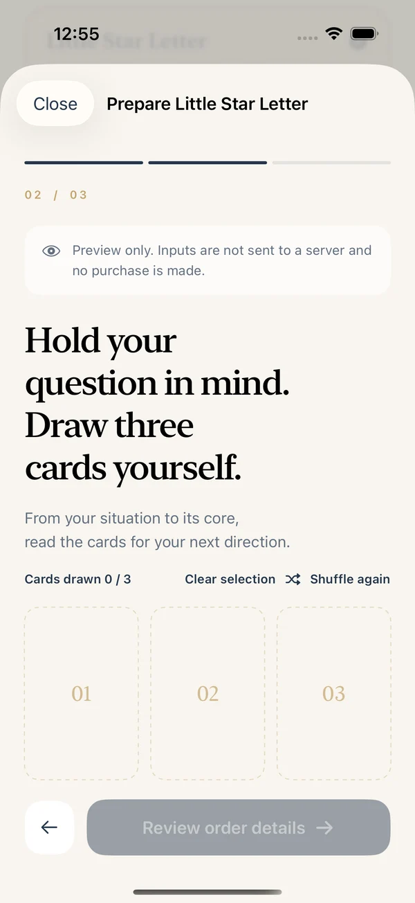
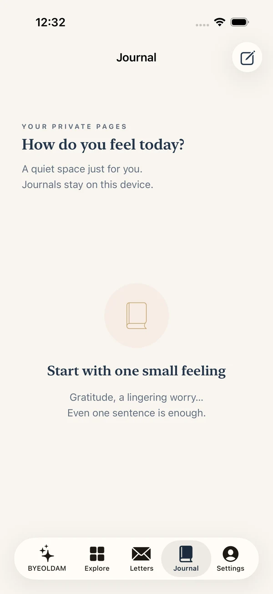

01 / LOVE
Ready to feel a spark again
Understand your feelings before a new connection.
You don’t have to find all the words yet.
Three cards you choose, one question you bring—
and a gentle, clear story that meets you there.
Awaiting App Store review · Coming after approval

“So, what can I do next?”
BYEOLDAM connects card symbolism with your situation. Start with a recommendation,
then explore its reasoning, your choices and a small, practical next step.
Big crossroads. Small everyday questions.
Find a story close to yours among
14 categories and 70 topics.
Understand your feelings before a new connection.

Find room to recover when work feels heavy.

Find your own reasons to stay or move on.

Gather your thoughts before reaching out.

A little time to understand yourself.

Look at what matters in your next choice.
This service does not predict health, pregnancy outcomes or investment returns.
As the cards shuffle, hold your question in mind.
Your three cards explore your current situation,
the heart of your concern and a direction to consider.
Tap the cards for a little taste of BYEOLDAM.
Tap each of the three cards to turn it over.
One simple step at a time.
Here’s how your reading reaches you.
Choose a story and share your situation, one question per screen.
Let the deck shuffle, then choose three cards with your question in mind.
After an in-app purchase, open the order email and personally tap Send in iPhone Mail.
Within 6 hours of actual receipt of your order email, the operator creates, checks and emails your PDF.
Instead of trying to guess every feeling, name the connection you want and one thing you would like to understand. Your next decision can wait until that conversation.
No hunting for the point in a sea of words.
Read a recommendation first, then explore
the three cards and what you can do next.
A SAMPLE based on a fictional situation. Paid readings depend on your input and cards.
You don’t have to answer everything at once.
From your words to your cards and notes,
the app moves at your pace.

Go back without losing your answers.

Shuffle, choose and reveal your cards.

Keep today’s reflections in your journal.
Buy one reading when you need it.
Two choices, with no recurring subscription.
A gentle, clear look at one concern.
Choose in app · Delivered within 6 hours of order receipt
More room for reasoning and your next steps.
Choose in app · Delivered within 6 hours of order receipt
Prices shown are for the Korean App Store. Currency and taxes vary by storefront; confirm the final amount in the purchase screen. The app is planned as a free download; PDF readings are separate in-app purchases.
Leave your thoughts in the journal and import
your emailed PDF into your own letterbox.
Record what the reading brings up and the little changes that follow.
Save your PDF in Files, then import it into the matching order.
Records are stored on your device. They do not automatically restore after reinstalling or changing devices. Keep your emails and PDFs separately.

The app and PDF readings support Korean, English, Japanese and Simplified Chinese.
Choose your language in app settings before ordering.
Need a little more help?
Our support guide is here for you.
The app is currently awaiting App Store review and is not publicly released yet. Launch is planned after approval. Use the button below to check its App Store availability.
No. Open the order email in the app after purchase, then personally tap Send in iPhone Mail. A sent email is not proof of receipt, so check the acknowledgement. If cancelled or unsuccessful, retry from the same order without another purchase.
The operator creates and checks your PDF, then emails it within 6 hours of actual receipt of your order email. Little Star Letter is 10 pages; Deep Star Story is 25. This is AI-assisted manual creation, not live counselling.
The reading uses card symbolism and your situation to suggest a direction. It does not establish future facts or another person’s thoughts, and does not replace medical, legal or investment advice.
Journal entries, orders and imported PDFs stay on your current device. Automatic sync or restoration on another device is not supported. Keep your emails and PDFs separately; contact support with your order ID before buying again.
Korean, English, Japanese and Simplified Chinese are supported. Choose your language before ordering and check the PDF language on the review screen. Later app language changes do not change existing orders.
Contact support with the order ID, product and time of the issue. Apple refund requests can be made at reportaproblem.apple.com and are reviewed and handled by Apple. Do not send passwords or card numbers.
Three cards. A letter just for you.
Meet BYEOLDAM on iPhone.
Currently awaiting review. Download may not be available yet; the app is planned to launch after approval. The service is for adults aged 19 and over.